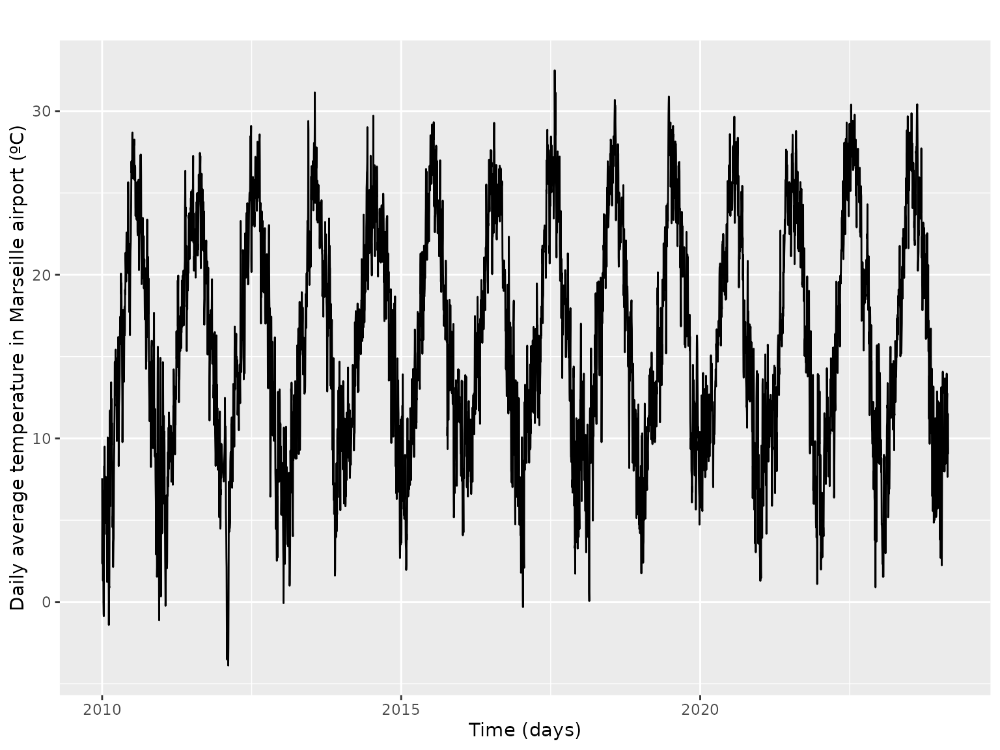
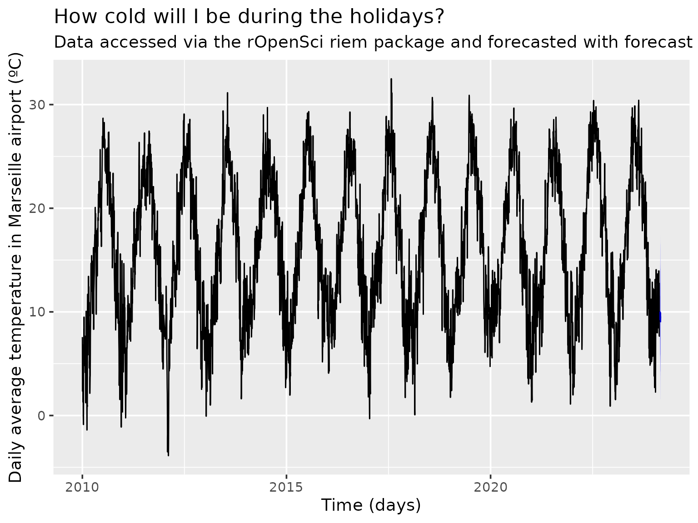
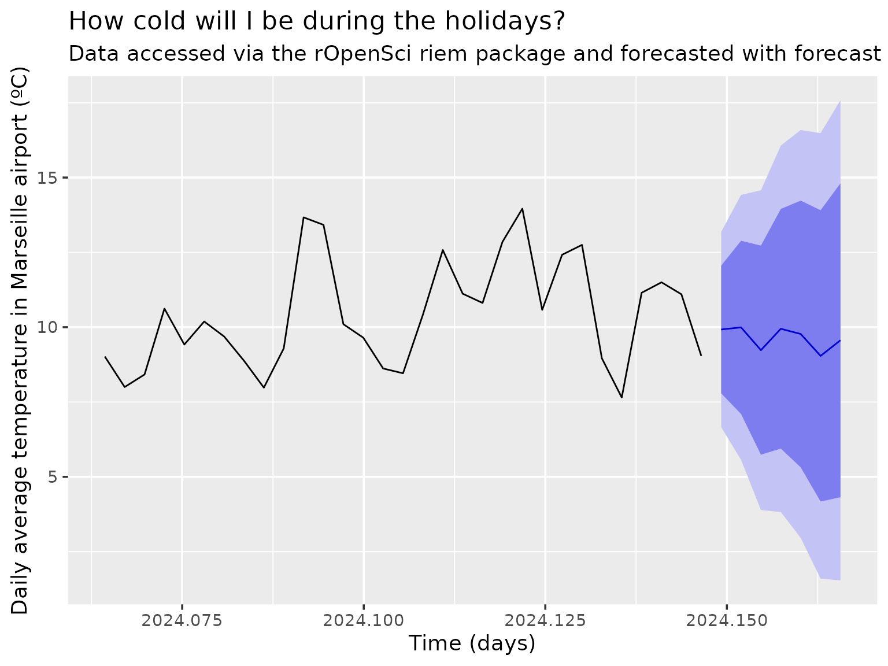
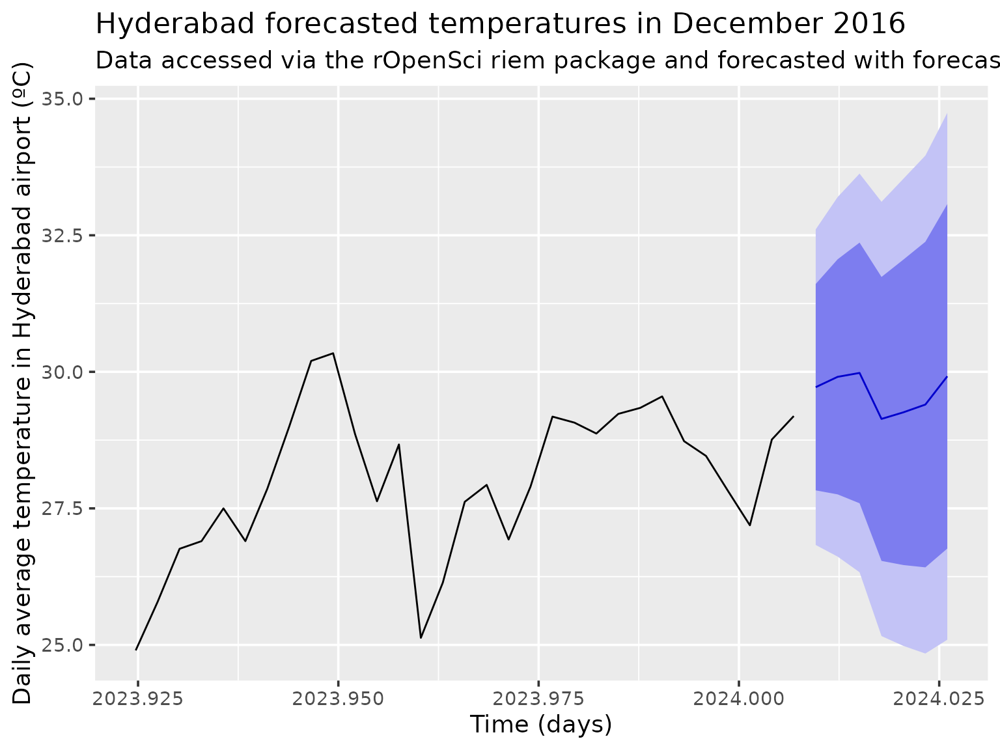

Forecasting temperature at your vacation destination
M. Salmon
Source:vignettes/articles/forecast.Rmd
forecast.RmdFor Christmas I’ll travel to Marseille. What temperatures should I expect there? I could of course open a weather app, but in this vignette I want to give an example using the riem and forecast packages.
Find airport for Marseille
The name of the network for France is “FR__ASOS”. I already know there’s only one airport near the city.
library("riem")
library("dplyr")
france_airports <- riem_stations(network = "FR__ASOS")
marseilles_airport <- filter(france_airports, grepl("MARSEILLE", name) | grepl("Marseille", name))
marseilles_airport## # A tibble: 1 × 22
## index id synop name country elevation network online plot_name archive_end
## <int> <chr> <dbl> <chr> <chr> <dbl> <chr> <lgl> <chr> <chr>
## 1 69 LFML 99999 Mars… FR 36 FR__AS… TRUE MARSEILL… NA
## # ℹ 12 more variables: modified <chr>, spri <int>, tzname <chr>, iemid <int>,
## # archive_begin <chr>, metasite <lgl>, wigos <chr>, longitude <dbl>,
## # latitude <dbl>, state <chr>, lon <dbl>, lat <dbl>Get time series of temperature for Marseille airport
We’ll transform it to daily average, and convert Fahrenheit to Celsius thanks to the weathermetrics package. We impute the missing values and remove outliers via the use of forecast::tsclean.
marseille <- riem_measures(station = marseilles_airport$id,
date_start = "2010 01 01")
marseille <- group_by(marseille, day = as.Date(valid))
marseille <- summarize(marseille, temperature = mean(tmpf))
marseille <- mutate(marseille, temperature = weathermetrics::fahrenheit.to.celsius(temperature))
library("ggplot2")
library("forecast")
marseille_ts = ts(as.vector(tsclean(marseille$temperature)), freq=365.25, start=c(2010, 1))
autoplot(marseille_ts) +
ylab("Daily average temperature in Marseille airport (ºC)") +
xlab("Time (days)")
Forecast for Marseille
For this we use the forecast package. We use the stlm because our time series obviously present yearly seasonality.
fit <- stlm(marseille_ts)
pred <- forecast(fit, h = 7)
# plot
theme_set(theme_gray(base_size = 14))
autoplot(pred) +
ylab("Daily average temperature in Marseille airport (ºC)") +
xlab("Time (days)") +
ggtitle("How cold will I be during the holidays?",
subtitle = "Data accessed via the rOpenSci riem package and forecasted with forecast")
Mmh I don’t see anything, but autoplot.forecast has an include parameters, so I’ll only plot the last 31 values.
autoplot(pred, include = 31) +
ylab("Daily average temperature in Marseille airport (ºC)") +
xlab("Time (days)") +
ggtitle("How cold will I be during the holidays?",
subtitle = "Data accessed via the rOpenSci riem package and forecasted with forecast")
What if I went somewhere else?
Ok, what if I had travelled to, say, Hyderabad in India?

Without surprise, we forecast I’d have enjoyed warmer weather.
I wouldn’t advise you to really use such code to forecast temperature, but I’d recommend you to use riem for getting weather airport data quite easily and to dig more deeply into forecast functionalities if you’re interested in time series forecasting. And stay warm!